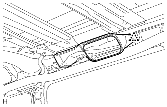
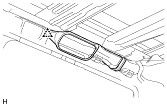
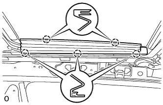
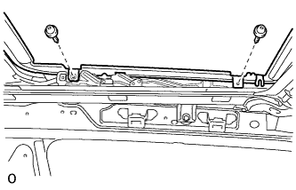
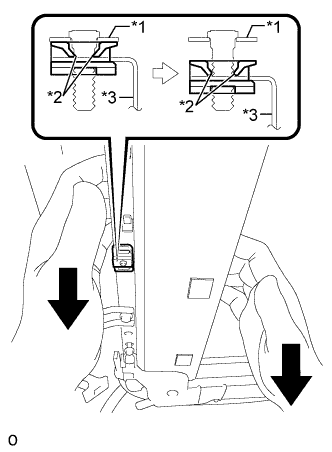
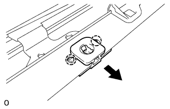

КОЖУХ ЛЮКА > СНЯТИЕ |
| 1. ОТСОЕДИНИТЕ ПРОВОД ОТ ОТРИЦАТЕЛЬНОГО ВЫВОДА АККУМУЛЯТОРНОЙ БАТАРЕИ |
| 2. СНИМИТЕ ОБИВКУ КРЫШИ В СБОРЕ (для 5-х дверных моделей) |
Снимите обивку крыши (Нажмите здесь).
| 3. СНИМИТЕ ОБИВКУ КРЫШИ В СБОРЕ (для 3-х дверных моделей) |
Снимите обивку крыши (Нажмите здесь).
| 4. СНИМИТЕ ЛЕВУЮ ПОДУШКУ БЕЗОПАСНОСТИ ЗАНАВЕСОЧНОГО ТИПА В СБОРЕ |
Снимите левую подушку безопасности занавесочного типа (Нажмите здесь).
| 5. СНИМИТЕ ПРАВУЮ ПОДУШКУ БЕЗОПАСНОСТИ ЗАНАВЕСОЧНОГО ТИПА В СБОРЕ |
| 6. СНИМИТЕ ЗАДНИЙ ВОЗДУХОВОД КРЫШИ № 3 (для моделей с двойной системой кондиционирования) |
|  |
Отсоедините фиксатор и снимите воздуховод.
| 7. СНИМИТЕ ЗАДНИЙ ВОЗДУХОВОД КРЫШИ № 5 (для моделей с двойной системой кондиционирования) |
|  |
Отсоедините фиксатор и снимите воздуховод.
| 8. СНИМИТЕ ЛЕВУЮ БОКОВУЮ ОБЛИЦОВКУ ЛЮКА |
|  |
Освободите 5 захватов и снимите боковую облицовку.
| 9. СНИМИТЕ ПРАВУЮ БОКОВУЮ ОБЛИЦОВКУ ЛЮКА |
| 10. СНИМИТЕ СТЕКЛО ЛЮКА В СБОРЕ |
|  |
С помощью отвертки для винтов "torx" T25 выверните 4 винта и снимите стекло.
| 11. СНИМИТЕ УПЛОТНИТЕЛЬ ЛЮКА |
Установите уплотнитель люка.
| 12. СНИМИТЕ КОЖУХ ЛЮКА В СБОРЕ |
Отсоедините 4 сливных шланга от люка.
Выверните 4 болта и отверните 4 гайки.
Ослабьте 4 гайки, как показано на рисунке.
|  |
Оттяните вниз кожух люка в сборе и открепите 2 захвата защелки правого замка люка от шпильки, как показано на рисунке.
| *1 | Кронштейн (панель крыши) |
| *2 | Захват защелки правого замка люка |
| *3 | Кожух люка в сборе |
Отверните 4 гайки и снимите кожух люка в сборе.
|  |
Открепите 2 захвата и снимите защелку правого замка люка с кожуха люка в сборе.